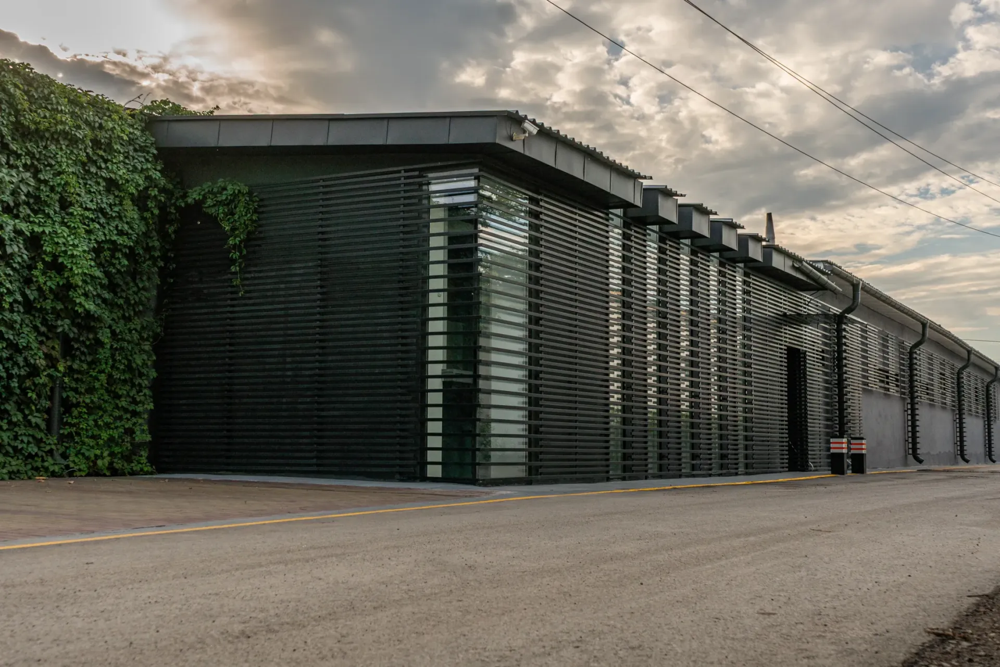
Реализованные объекты
Отобранные новые и архивные работы Samari Pro — без повторяющихся ракурсов.
Проекты
Фасадное остекление, входные группы и внутренние конструкции. Короткая подборка показывает диапазон задач без длинной однотипной ленты.
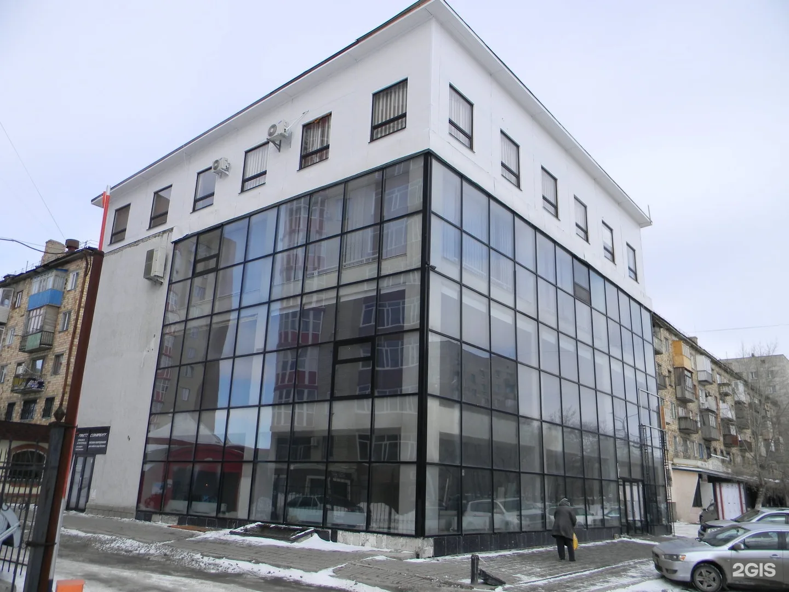
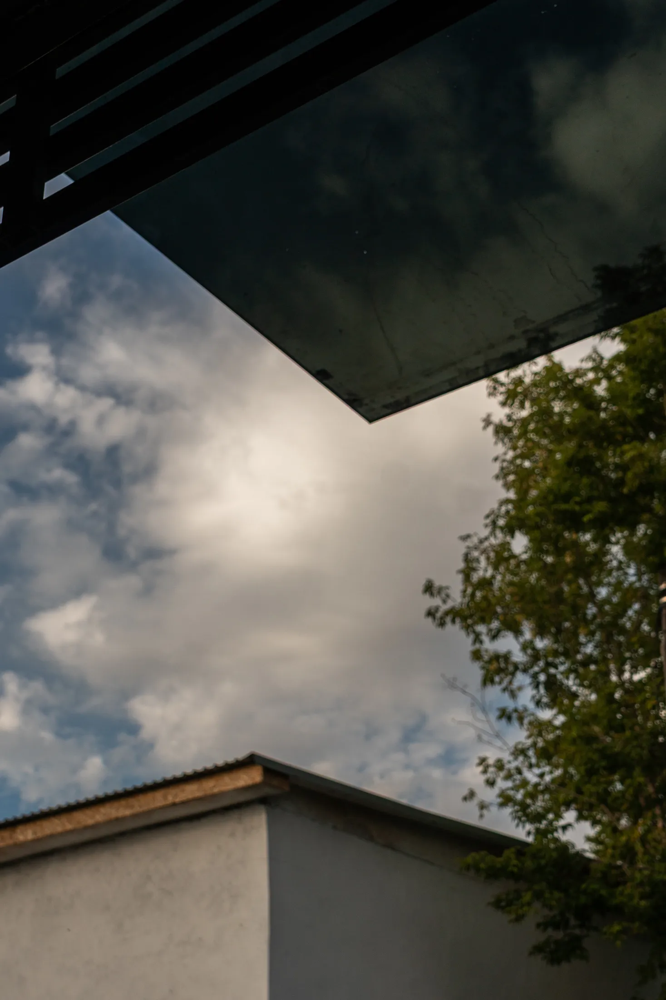
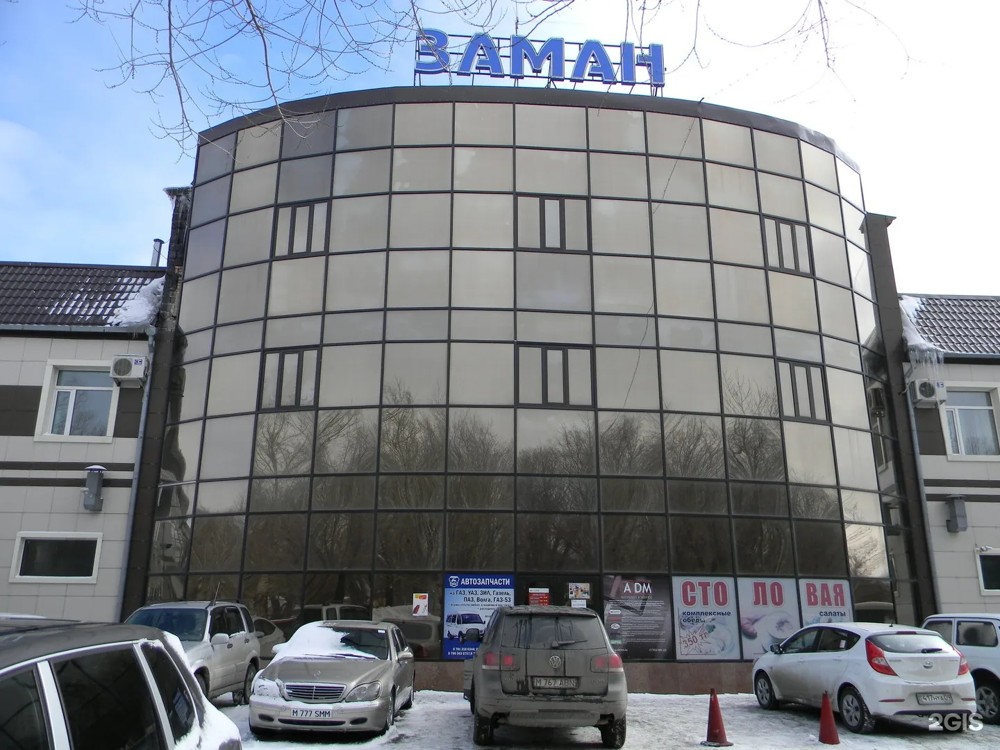
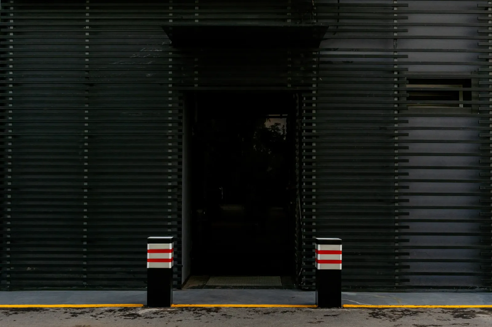
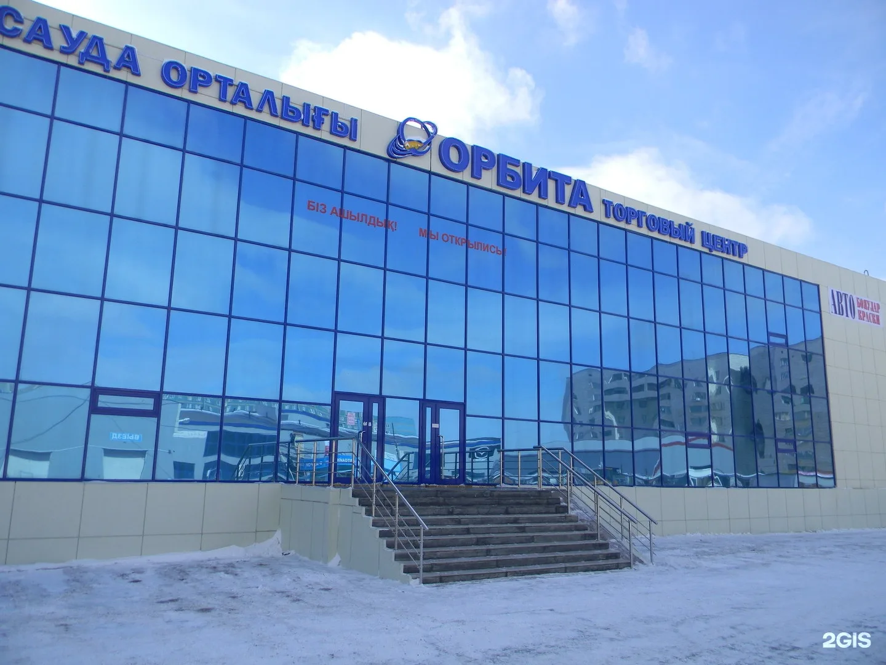
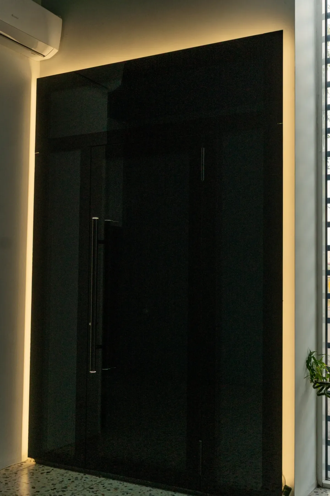
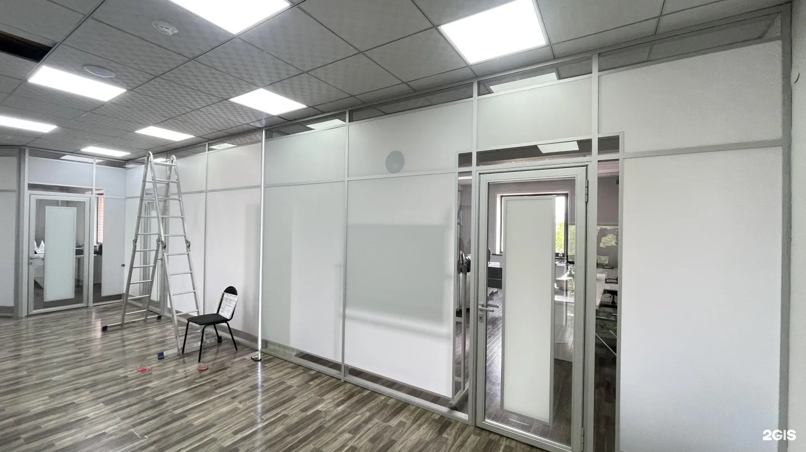
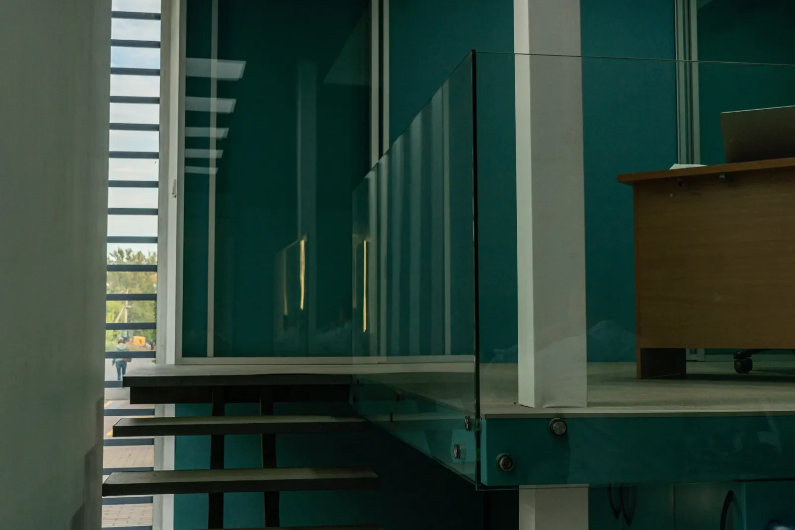
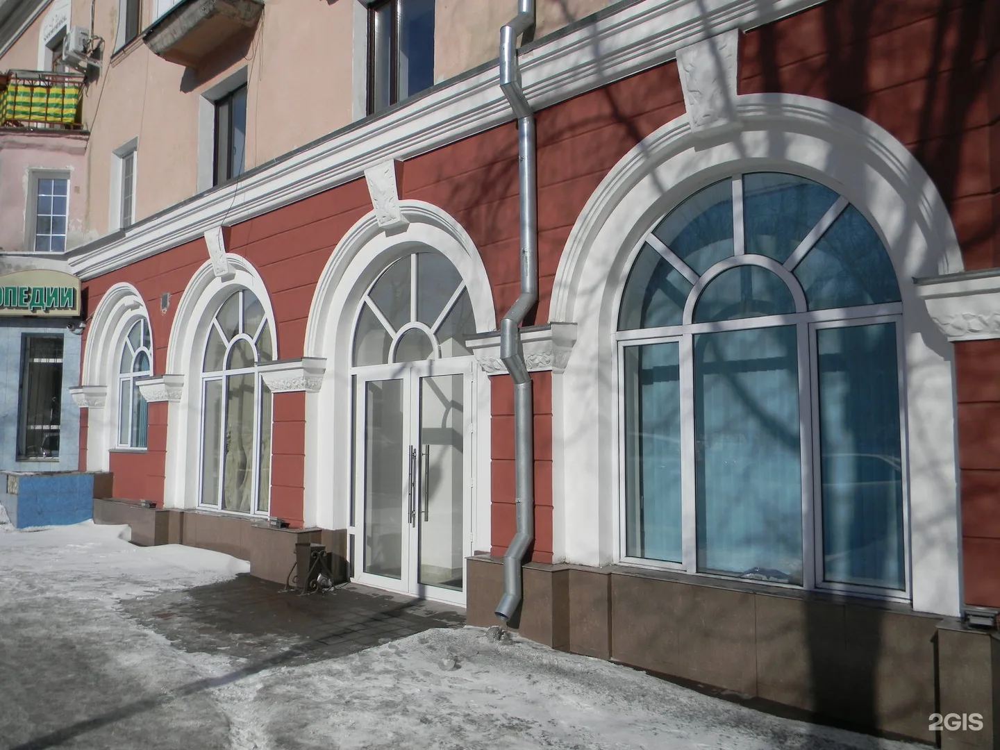
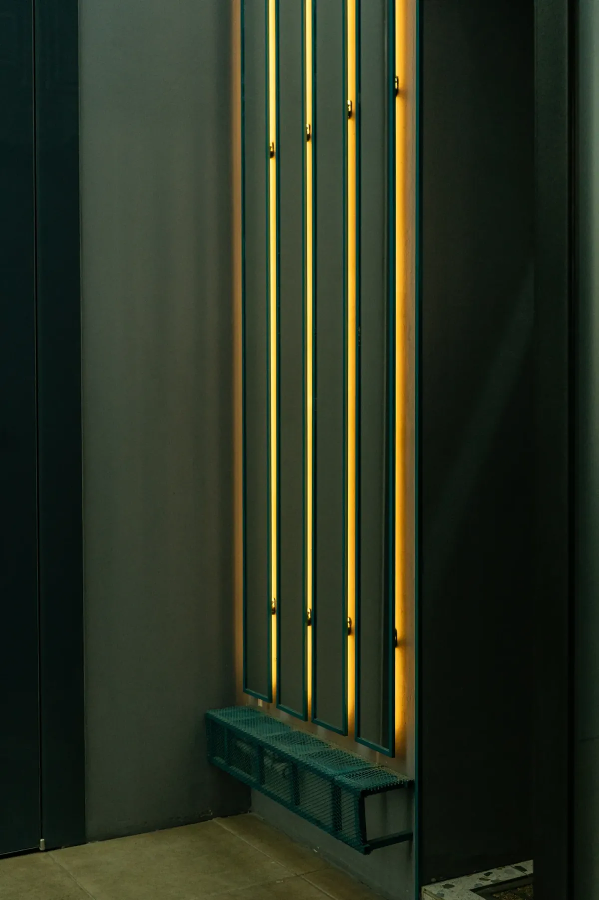
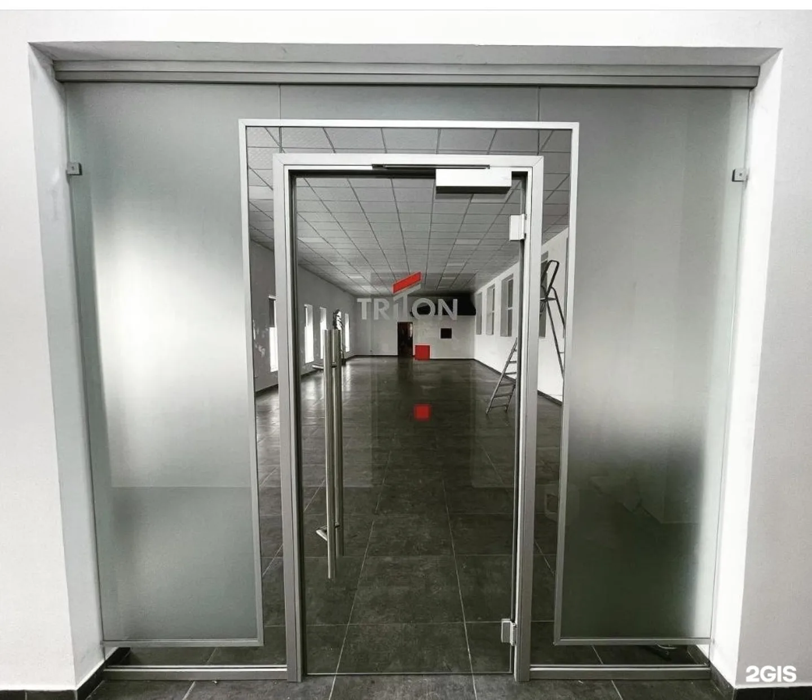
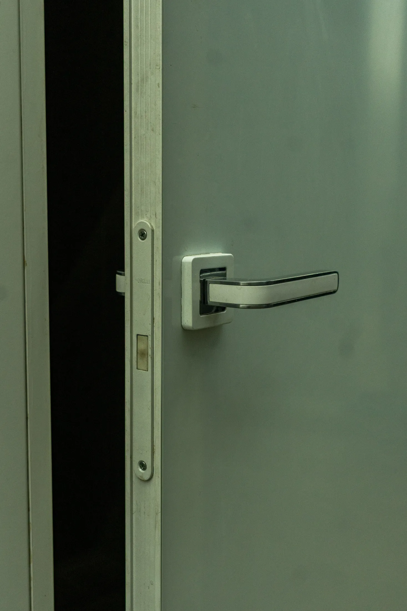
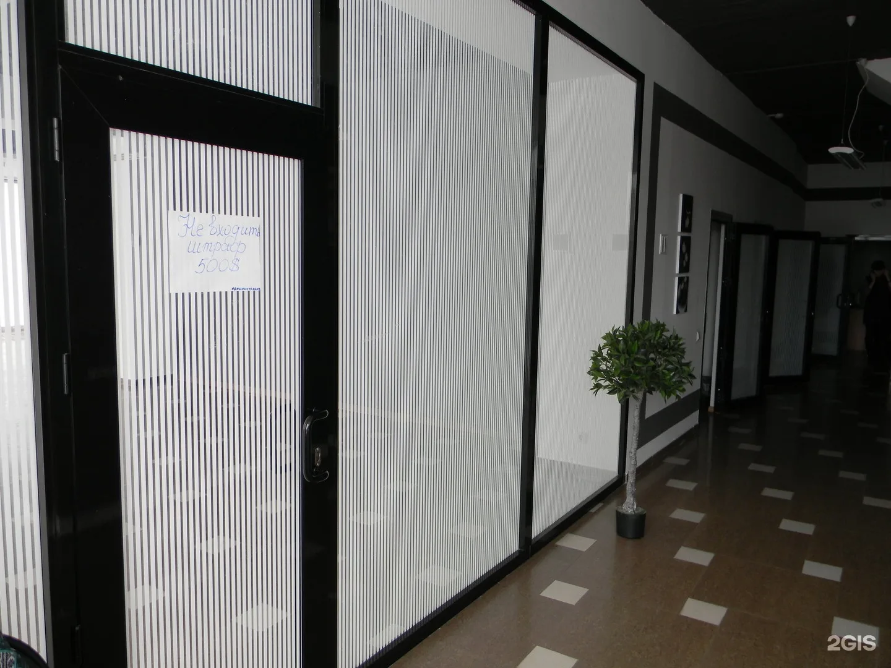
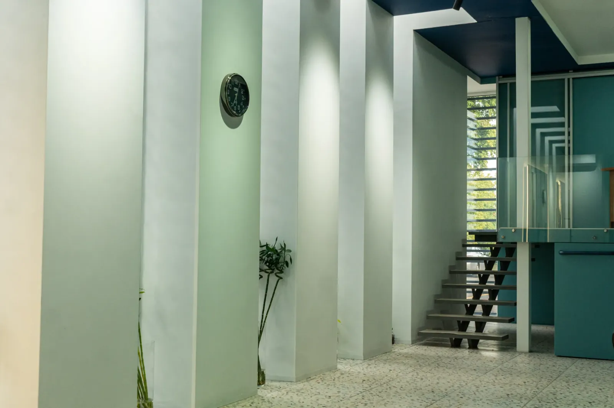
Новые фотографии предоставлены компанией. Архивные кадры ранее опубликованы в галерее Samari Pro в 2GIS.
Есть похожий объект?
Отправьте в WhatsApp проект, спецификацию, размеры или фотографии. Уточним объём и следующий шаг.